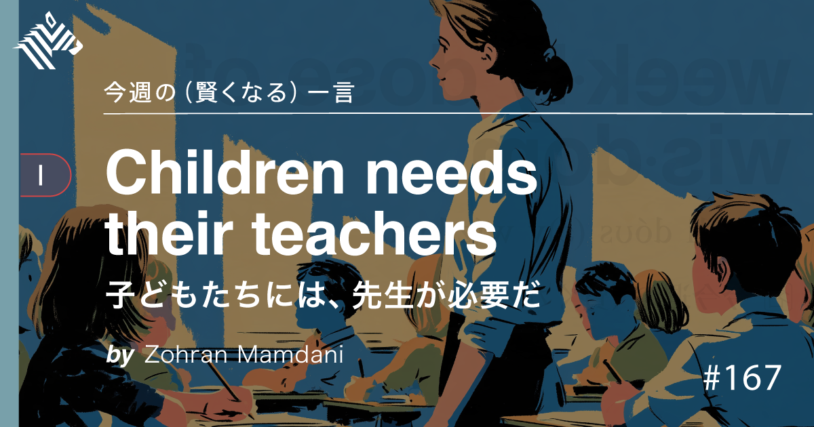

01
【皮肉】出世する人は「同じ会社」に居続けている
発行日時：2026年9月6日 05:30 JST ・ FORTUNE（NewsPicks掲載）
あなたに関係ありそうな理由
組織で新しい役割を任せる時、職歴の長さではなく、社内で積んだ実績・信頼・異動経験をどう見るかの材料になるためです。
概要
この記事は、転職を繰り返すほど出世しやすいという通念を、米国企業の上位層のキャリア研究から問い直す。アップルのジョン・ターナス、マイクロソフトのサティア・ナデラ、アマゾンのアンディ・ジャシーはいずれも、各社に入社してから長い時間を経てトップに就いた例として挙げられる。記事の著者は、雇用が全面的に流動化したわけではないとし、退職率は25年前と大きく変わらず、レイオフ率はむしろ下がり、予想されたフリーランス急増も起きなかったと説明する。フォーチュン100社の上位10人を追った研究では、役員になるまでの28年間に勤めた企業は平均3社で、現勤務先への在籍は役員就任前に平均13年だった。別の研究では、上位職への移動は社外への転職より社内異動で実現する方が多く、フィンランドの分析では社内移動の可能性が約6倍とされた。企業側が、未知の外部候補よりも仕事ぶりや関係者を知る内部候補に、大きな役割を任せやすいことが背景にある。外部採用者は組織に適応する初期コストを抱えやすいという研究も紹介される。ただし記事は、合わない職場を離れることや、自分に合う仕事を探すための転職まで否定しない。表示コメントでは、大企業のように社内異動の選択肢が多い環境と中小企業を同一視できないという指摘、長く残ったから昇進するのではなく昇進できる人が残るという逆の因果への注意、在籍年数より仲間を増やしたことが重要だという見方が出た。したがって結論を「居続ければ出世」と短絡しない方がよい。見るべきなのは、次の職務に必要な知識、横の関係、任せた結果を社内で積み上げられているかである。転職と残留の二択ではなく、社内での挑戦機会が実際にあるか、自分の成長と組織の機会が重なるかを確かめる記事として読める。加えて、肩書きだけでなく、どの部署で何を学び、誰と協働し、成果がどの範囲で再現されたかを残すことが、次の役割を判断する材料になる。社内に挑戦機会がなければ残留が正解とは限らないため、その条件も本人と組織が率直に見極める必要がある。短い在籍でも有効な経験はあり、年数だけでなく、部署をまたぐ学びが役割の幅につながっているかまで見たい。
仕事や会話で使える一言
「長くいること自体ではなく、次の責任を任せたくなる実績と信頼を残せているかを見たいです。」
NewsPicks原文を読む
02
【ミニ教養】日本は逆行。学校での「AI禁止」が始まった
発行日時：2026年9月6日 05:30 JST ・ NewsPicks編集部

あなたに関係ありそうな理由
生成AIを仕事や学びに使う時、「答えを代行する使い方」と「考える途中を支える使い方」を設計し分けるヒントになるためです。
概要
この記事は、ニューヨーク市が2-Kから8年生まで、約60万人の生徒による学校での生成AI利用を原則1年間停止する方針を発表したことを起点に、AI教育の目的を考える。単なる恒久的な禁止ではなく、読解、執筆、問題解決で自分なりに試行錯誤する過程を守るためのモラトリアムだと記事は位置付ける。背景として、ペンシルベニア大学の研究が紹介される。GPT支援が使える間は成績が上がった一方、支援を外すと対照群より得点が17％低くなったという。答えを直接返す方式ではなく、ヒントを出す慎重なチューター型なら低下を避けられたという結果もあり、記事はAIそのものより、何を代行させるかに問題があると読む。市は中学段階までのスクリーンタイムを45分以下にする方針も示し、幻覚などの安全性に加え、低年齢での自律的な学習を優先する姿勢を打ち出した。一方、日本では、次期学習指導要領案で小学校から情報教育を広げ、AIの仕組み・リスク・活用を扱う方向が示されている。記事は両者を単純に優劣で比べず、ニューヨーク市は個々人の思考力の保護、日本は将来の社会と産業を支える人材育成を強く意識していると対比する。表示コメントでは、家庭でAIに触れられる以上、学校だけで遮断しても徹底は難しいという現実的な意見、AIなしで考える基礎とAIを使いこなす力の両方が要るという提案、20年後にどんな社会を望むかを若い世代の声と共に議論すべきだという指摘があった。使うか禁じるかの二択にせず、最初は自力で考え、どの段階からヒントや検証に使うか、利用後に説明や再現ができるかを学習設計として決める必要がある。実務のAI導入でも同じで、速く出た答えと、自分たちが理解して判断できる状態を分けて扱うことが大切になる。制度の成否は、禁止の範囲だけでなく、教師が代替教材を準備できるか、家庭環境による利用格差をどう扱うかにも左右される。出力を使った後に、根拠を遡り、手順を他者に説明できるかを評価に含めることが、利用可否の議論より長く効く。また、使った事実を隠すのでなく、使った範囲と検証の過程を記録する運用も必要になる。教師だけに任せず、教材やルールを整える必要がある。
仕事や会話で使える一言
「AIは答えを代行する装置ではなく、考える途中にどんなヒントを置くかで使い方が変わります。」
NewsPicks原文を読む
03
米株の熱狂 125年前の強気相場の教訓とは
発行日時：2026年9月6日 05:20 JST ・ The Wall Street Journal（NewsPicks掲載）
あなたに関係ありそうな理由
AI相場やレバレッジ商品を考える時、熱狂の強さではなく、流動性・資金余力・投資と賭けの境目を見る材料になるためです。
概要
ウォール・ストリート・ジャーナルのコラムは、現在の米国株の強気相場を1999年のITバブルだけでなく、1901年前後の投機熱と比べる。2026年にはS&P500指数オプションのうち当日満期を迎える契約が1日300万枚を超える一方、1901年のニューヨーク証券取引所では売買回転率が319％に達し、市場全体の株式が約16週間ごとに入れ替わるほど短期売買が盛んだったという。現代の予測市場と、当時、株価の上下だけに賭けたバケットショップも重ねる。レバレッジ型ETFで日々の値動きを2倍、3倍にする取引が広がる今に対し、当時の投機家は10倍超の信用取引を行い、現在のパーペチュアル先物には100倍までの例もあると紹介する。技術は違っても、少額から市場に参加できる「民主化」が、投資とギャンブルの境目を曖昧にする構図は似るというのが筆者の問題意識だ。1900年に19％、1901年に20％、1902年にも5％上昇した米国株は、その後も伸びたが、1907年の恐慌では30％急落し、資金を貸し込んだ信託会社への取り付けが連邦準備制度創設につながった。筆者は直ちに売却すべきだとは言わず、長期的な規律と現金余力を持つ人が混乱時に強かったと結ぶ。表示コメントでは、危機時にキャッシュがなければ投資機会を生かせないという実感、レバレッジの逆回転は金融危機で繰り返されるという注意、取り残される不安が相場を動かすという指摘があった。これは将来の価格を予言する記事ではない。歴史的な比喩を使いながら、参加しやすさ、借入、取引頻度が高まるほど、自分がどこから投資を賭けに変えているかを確かめるよう促すコラムである。商品が便利でも、損失許容額、必要な現金、長期目標を先に決め、評価額と手元資金を混同しないことが読み手の課題になる。加えて、過去との類似は未来の再現を保証しない。比較の役目は不安を煽ることではなく、上昇が続く時にも資金調達の条件、取引相手、解約しにくい商品、売却に必要な時間を確認させることにある。投資判断は、このコラムだけでなく、自身の目的と保有状況に照らして行う必要がある。過去との共通点だけでなく、制度や参加者の違いも照合したい。
仕事や会話で使える一言
「参加しやすくなるほど、投資と賭けの境目は自分で引かなければなりません。」
NewsPicks原文を読む
04
【歴史学】なぜユダヤ人は「中東の火種」になり続けるのか
発行日時：2026年9月6日 05:30 JST ・ NewsPicks編集部
あなたに関係ありそうな理由
現在の中東情勢を、単純な善悪や一つの集団像ではなく、歴史・安全保障・政治が重なった問題として読む助けになるためです。
概要
この記事は、歴史学者の鶴見太郎氏への取材を通して、イスラエルの安全保障観や現在の中東情勢を理解するために、ユダヤ人への迫害の歴史、シオニズム、英国統治期のパレスチナをたどる。記事の説明では、2023年10月のハマスによる攻撃で約1200人が殺害された経験が、イスラエル社会の強い安全保障不安を考える一つの背景として置かれる。ただし、歴史的背景を知ることは現在の暴力を正当化することでも、特定の一方を擁護することでもないと、著者コメントは明確に留保する。ロシア帝国でのポグロムは、社会の不安定化の中で少数派が標的にされ、経済的・社会的な要因が重なった現象として紹介される。記事は、シオニズムをパレスチナにユダヤ人の民族的拠点を築こうとする運動として説明し、近代の国民国家形成、迫害の経験、英政府の統治や分類、複数の住民の歴史が重なって問題が複雑化したと描く。現政権の指導者が変わっても社会の支持構造が続けば政策が大きく変わらない可能性があるという見立ても、取材対象の歴史家の分析として示される。表示コメントでは、見出しのように「ユダヤ人」を一括りにすること自体が不適切で、ユダヤ人の中にもシオニズムや現イスラエル政府に対する多様な立場があるという批判が出た。別のコメントは、建国を唯一必然の選択として描くべきではなく、19世紀末から20世紀前半の複数の潮流とナチスの台頭を分けて考える必要を指摘する。この記事を読む際は、民族・宗教・国家・政府・個人を同じ主語にしないことが重要である。歴史の記憶が政治に影響しても、それが現在の政策を自動的に決めるわけではない。異なる経験と権利を消さず、どの主張が誰の分析なのか、何が確認済みの事実なのかを分けて読み続ける必要がある。加えて、当事者の安全、被害、政治的な責任を歴史の説明だけで相殺してはならない。難しいテーマほど、専門家の一つの解釈と、複数の一次資料、人権上の評価を混ぜずに扱う姿勢が必要になる。見出しの刺激性よりも、どの主体について、どの時代の、どの資料に基づく主張かを確認することが対話の前提になる。それでも分からない部分は、分からないまま残す慎重さも必要だ。
仕事や会話で使える一言
「歴史の背景を理解することと、現在の暴力を正当化することは分けて考えたいです。」
NewsPicks原文を読む
05
くら寿司、「ちいかわ」キャンペーン中止→「お詫びの気持ち」割引を発表【概要】
発行日時：2026年9月6日 10:34 JST ・ ORICON NEWS（NewsPicks掲載）
あなたに関係ありそうな理由
不正が判明した時、販売停止・顧客告知・補償・再発防止をどう分け、信頼回復を何で測るかを考える材料になるためです。
概要
この記事は、くら寿司が「ちいかわ」コラボキャンペーンを9月6日の営業開始から中止し、同日と翌7日に全品10％割引を実施すると発表した件を伝える。同社は前日に、調査の結果、キャンペーン実施に際して従業員の不正行為が判明したと説明したが、不正の具体的内容は記事時点で明らかにしていない。中止対象には、ビッくらポンのフィギュア、アクリルマグネット、缶バッジ、湯呑み、寿司皿、レシート応募、コラボメニュー、店舗の動画や装飾が含まれる。公式サイトは、コラボの早期終了に伴う「お詫びの気持ち」として割引を案内した。一方、記事ではテレビCMが引き続きキャンペーン実施中と伝える内容で放送されていることも記され、来店前と店頭で受け取る情報がずれる問題が残った。表示コメントには、賞品管理を含む内部不正の可能性を推測する声があったが、具体的な事実は公表されていないという留保も添えられている。別のコメントは、コラボ目当てで来店する顧客にとって全品割引がどこまで補償になるのか、現場の店員が説明や苦情対応の矢面に立つのではないかと懸念した。さらに、不祥事で傷つくのは価格満足より運営への信頼であり、割引が謝罪なのか集客策なのか曖昧に見える可能性、何が起きて再発をどう防ぐかの説明が信頼回復にはより重要だという意見も出た。企業にとって即時中止は、未使用の景品・広告・販促のコストを抱える厳しい決断だが、不正や不公平を継続する損失を避ける判断でもある。危機対応では、まず止めるべき対象、事実として公表できる範囲、影響を受ける顧客への案内、現場の支援、原因究明と再発防止を別々に管理する必要がある。値引きの是非だけでなく、受け手が何を失ったと感じているかを確かめ、説明と対応の順序を設計できるかが問われる。特に、広告、店頭、公式サイト、問い合わせ窓口で異なる案内が残ると、迅速な決定も混乱を深めかねない。対応の責任者と更新時刻を明らかにし、後から確認できる形で情報をそろえることが、次の顧客対応と検証の基盤になる。対応を受け取る顧客と、説明を担う現場の双方に、次の連絡時刻と窓口を示すことも重要になる。その速度も信頼の一部になる。
仕事や会話で使える一言
「信頼を傷つけた時は、値引きより先に、何が起きてどう防ぐのかを明確にする必要があります。」
NewsPicks原文を読む